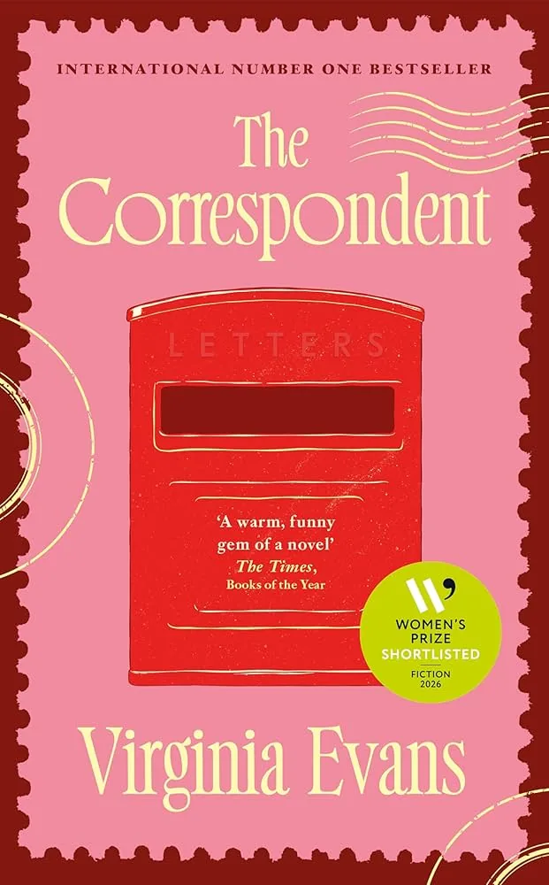

Virginia Evans Wins the 2026 Women’s Prize for Fiction: The Correspondent
A debut epistolary novel takes the prize on its 30th anniversary. What the judges chose, and why it matters for contemporary fiction.

On 11 June 2026, at Bedford Square Gardens in London, Virginia Evans won the 2026 Women’s Prize for Fiction for her debut novel The Correspondent. The book is a novel told entirely in letters. The protagonist is a 73-year-old retired lawyer named Sybil Van Antwerp. The win marks the 30th anniversary of the prize and the second consecutive year a debut novelist has taken it.
I’d predicted Wendy Erskine’s The Benefactors. I wasn’t even close. Erskine was longlisted but didn’t make the shortlist. The judges went a different way entirely, and the way they went is worth thinking about.
The win
The Women’s Prize for Fiction is awarded every year to the best novel published in English in the UK. The 2026 prize was sponsored by Audible and Baileys. The winner receives £30,000 and the ‘Bessie’, a bronze statuette by the late artist Grizel Niven.
The 2026 chair of judges was Julia Gillard, former Prime Minister of Australia. The panel included Mona Arshi, Salma El-Wardany, Cariad Lloyd, and Annie Macmanus. Their citation for The Correspondent called it “an uplifting and moving novel that confronts the hubris of youth with the wisdom of older age.” They described it as exemplary and as having “captured their hearts”.
This was the 30th anniversary edition of the prize. Previous winners include Zadie Smith, Chimamanda Ngozi Adichie, Maggie O’Farrell, and last year’s winner, Yael van der Wouden for The Safekeep. Of the six shortlisted authors, four were debut novelists. Four of the six titles came from independent publishers. The shape of the shortlist itself was a statement about where the prize sees serious fiction coming from in 2026.
The book
The Correspondent is a novel made entirely of letters and a small number of emails. The protagonist, Sybil Van Antwerp, is a retired lawyer in her early seventies, divorced, mother to two adult children. Her third child, Gilbert, died when he was eight. The book covers the letters Sybil writes between 2012 and 2022 to her brother, her best friend, her children, the dean of a university who keeps refusing her audit request, a customer service representative at a gene testing company, and several literary figures she admires, including Ann Patchett, Joan Didion, and Larry McMurtry.
The Ann Patchett correspondence is significant. Evans has an actual pen pal relationship with Patchett. Patchett gave the book a blurb that calls The Correspondent “a portrait of a small life expanding”. The novel is Evans’s first published book after she wrote seven unpublished novels over many years. It reached the top of the New York Times Fiction bestseller list on 1 February 2026. It was a word-of-mouth success in the months before it won the Women’s Prize, comparable in trajectory to Susie Boyt’s Loved and Missed a few years earlier.
The themes are familiar in literary fiction but rare in their compression. Regret and forgiveness. Family and what it asks of us. The discovery of solace late in life. The grief of a child who died decades ago and never stopped being lost. The book is sharply observed, funny, and rigorous. Sybil is not always likable. She’s opinionated and certain of her positions in ways the reader is sometimes meant to interrogate. The novel earns its emotional weight by making her a complete person rather than a sympathetic one.
The form as an argument
The epistolary form is doing real work here, and the reason it works is the reason the form has always worked in serious fiction. A letter has a recipient. Each letter Sybil writes is shaped by the person she’s writing to. Her voice to her daughter isn’t her voice to the dean. Her voice to Ann Patchett isn’t her voice to the customer service representative at the gene company. The novel doesn’t have to tell you who Sybil is. It shows you who she is by showing you who she becomes with each new addressee.
This is compression at the structural level rather than the sentence level. Each letter is small. The reader assembles Sybil’s interior life from the gaps between letters. The novel is doing the same work that the minimalist short fiction tradition does at sentence level: trusting what isn’t said to carry as much weight as what is said. Carver did it with grief at the sentence. Evans does it with the act of becoming knowable to other people through writing, at the level of the whole book.
The form is also generationally pointed. Sybil writes letters because she’s seventy-three. The novel is partly about a way of being in the world that’s disappearing. The few emails in the book come late and are mostly written under duress. Sybil resists the digital. The book sits in the same conversation as several other recent novels about what we lose when correspondence stops being slow and considered.
The seven unpublished novels
Evans wrote seven novels before The Correspondent. None were published. The eighth was. This detail is being mentioned in almost every piece of coverage and it deserves to be. It’s the working-writer fact of the year.
Most published novelists have one or two unpublished books behind them. Most who get to seven stop. The fact that Evans didn’t stop, and that the eighth book then wins the Women’s Prize on its first turn, is the kind of thing that should be required reading for anyone currently looking at a manuscript and wondering whether to try again.
The other working-writer fact is that The Correspondent was first an American success. Crown Publishing in the US picked it up in 2025 and it became a word-of-mouth bestseller. The UK edition followed via Michael Joseph. By the time the Women’s Prize shortlist landed, the book had already been adopted by readers. The judges were honouring a book the audience had already chosen. That’s not a small thing. It’s what the Women’s Prize has been good at doing for years.
What the judges chose, and what they didn’t
The 2026 shortlist was darker on average than the winner. Marcia Hutchinson’s The Mercy Step is a difficult novel about diaspora and inheritance. Addie E. Citchens’s Dominion takes on Black Mississippi family history. Sheena Kalayil’s The Others sits in East Germany in 1989. Rozie Kelly’s Kingfisher and Lily King’s Heart the Lover round out the six, both bringing their own weight to the company.
The judges chose, from that company, the book that ends in something like reconciliation. They chose joy. In a year when most major prize winners have been formal exercises in difficulty, the Women’s Prize chose a book about a woman who learns to be in better contact with the people she loves. Daniel Kraus’s Angel Down won the 2026 Pulitzer for Fiction and is structured as a single unbroken sentence describing the First World War. Katie Kitamura’s Audition, which I reviewed last month, was a Booker finalist and a Pulitzer finalist and a Women’s Prize longlistee. Neither it nor Angel Down gave the reader much in the way of comfort.
The Correspondent gives the reader comfort. It doesn’t sentimentalise. Sybil’s son still dies and her marriage still ends. The university dean still refuses her. But the book lands in a place where her letters have made connection possible. The form is the comfort. Writing to people is the practice the book is recommending.
I’m not sure I’d have picked it for the prize. I’d have picked The Benefactors and I was wrong on the night. But the more I think about why the judges went where they went, the more sense it makes. In a year when fiction’s been competing to be the most uncomfortable, the Women’s Prize chose the book that takes seriously the possibility of late change.
What this means for fiction now
A few things, briefly.
First, the Women’s Prize continues to honour formally ambitious debuts. Last year was van der Wouden’s The Safekeep. This year is Evans’s The Correspondent. Both are first novels by writers nobody had heard of two years ago. Both are formally unusual. The prize is now reliably open to writers without a track record, and that’s worth noting.
Second, late-life voice is finding a serious audience. Sybil is 73. The book trusts that a seventy-three-year-old protagonist can carry a literary novel. That’s been a hard sell in commercial publishing for a long time. The Correspondent’s success suggests the audience is more ready for it than publishers had been assuming.
Third, the epistolary form is back. The novel-in-letters has been an underused form in serious literary fiction since the early 2000s. The Correspondent will make it more viable for the next round of debut novelists. Expect more letter-novels on the next two or three years’ worth of longlists.
If you write fiction, read it. The form is doing things you might not have realised the form could still do. If you don’t usually read literary fiction, this is a friendly entry point: the letters are short, the voice is sharp, the protagonist is funny, and the book lets you in.
Buying the book
The Correspondent by Virginia Evans is published in the UK by Michael Joseph (Penguin Random House UK). The hardback is 304 pages. Every copy bought through the link below supports independent UK bookshops and earns Tumbleweed Words a small affiliate commission at no extra cost to you.
Buy The Correspondent from Bookshop.org →This page contains Bookshop.org affiliate links. If you buy through them, Tumbleweed Words earns a small commission at no extra cost to you.
David Moran is a writer and editor based in Edinburgh. Find more prize coverage and reviews of contemporary literary fiction at Tumbleweed Words, or subscribe to the newsletter. If this was useful, buy me a coffee.